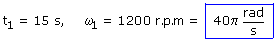
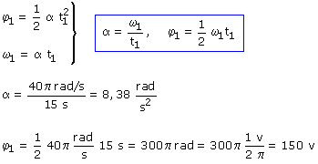

La velocidad angular de un movimiento acelerado no debe darse en r.p.m porque en cada revolución se tarda un tiempo diferente. Se hace en este caso porque los motores aceleran hasta alcanzar una velocidad de régimen que ya mantienen constante. La velocidad de régimen, en este problema, es de 1200 r.p.m
Ecuaciones del movimiento:
 |
 |
Parámetros: α (Incógnita) |
Aplicación:
Datos: |
 |
Incógnitas: φ1 |

Como no hay posición angular inicial el desplazamiento coincide con la posición angular